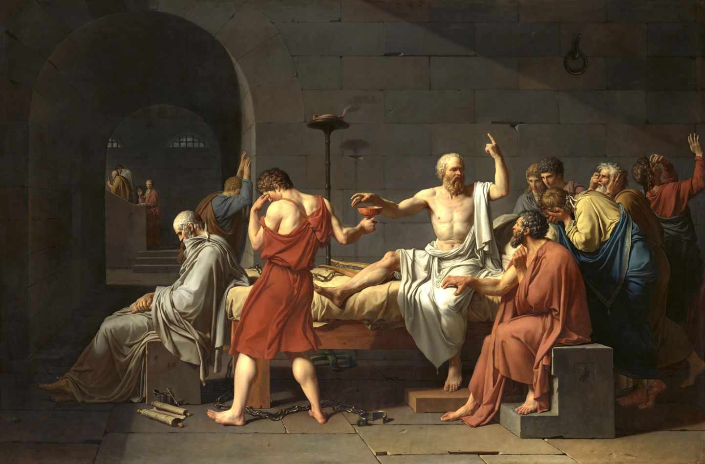

Em 399 a.C., o filósofo Sócrates foi levado a julgamento em Atenas. Acusado de impiedade e de corromper a juventude, sua defesa se tornaria um marco na história da filosofia ocidental.
A defesa de Sócrates, registrada por Platão em "Apologia de Sócrates", foi feita com firmeza e ironia. Ele explicou que sua missão era estimular o pensamento crítico, cumprindo um papel divino. Ao invés de pedir perdão, propôs como pena uma homenagem: receber refeições gratuitas no Pritaneu, como os heróis da cidade.
Mesmo com uma margem pequena de votos, Sócrates foi considerado culpado e sentenciado à morte por cicuta. Recusou a fuga proposta por seus amigos, afirmando que obedeceria às leis da cidade até o fim. Morreu tranquilo, rodeado por discípulos.

A postura firme de Sócrates frente à injustiça tornou-se símbolo da integridade filosófica. Sua história influenciou profundamente o pensamento ético e político da filosofia ocidental. O julgamento é lembrado como um marco da liberdade de expressão e do questionamento racional.